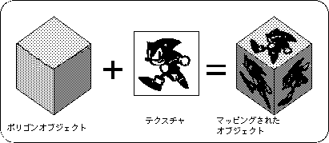
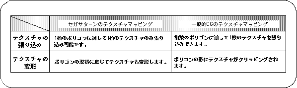
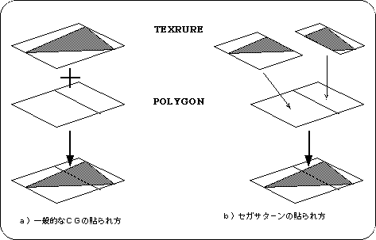
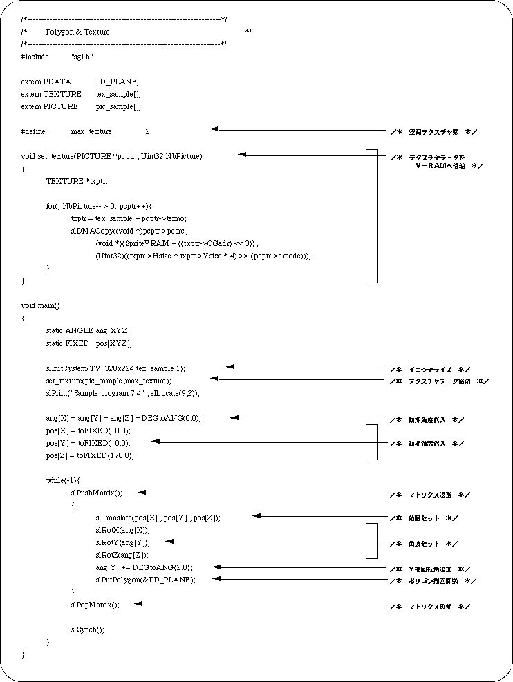
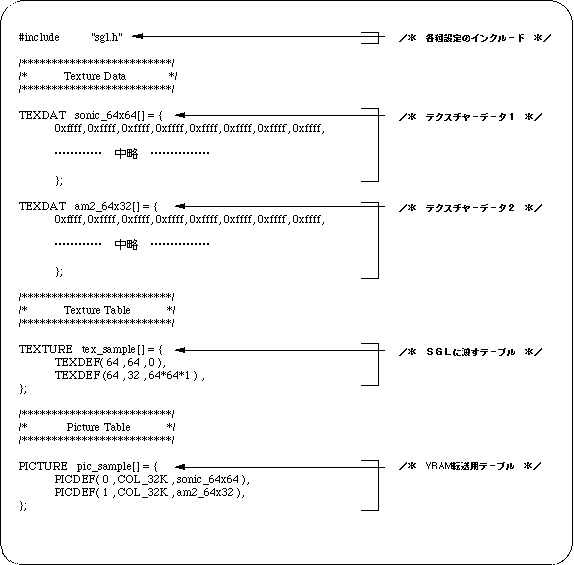
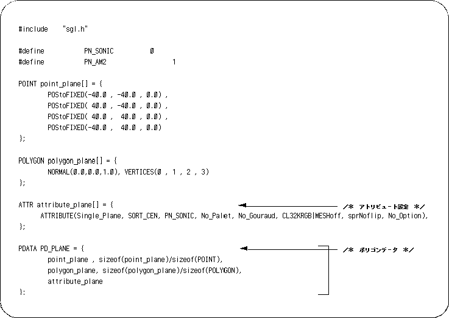

Return to previous page | Return to menu | Go to next page
The third parameter “Texture” is required when using texture mapping. Specify the number of the texture to be actually used from the texture table registered with the function “slInitSystem”.
When not using a texture, specify the macro “No_Texture”.
Texture mapping is a general term for the function that puts two-dimensional graphics on the surface of a polygon. Needless to say, only the display color can be expressed by polygons, and its reality is limited. However, by making full use of the texture mapping function, it is possible to express more realistic 3D objects such as textures and surface patterns of objects that could not be expressed with polygons alone.

Sega Saturn's texture mapping and so-called texture mapping in general CG are roughly divided into two different properties as shown in Table 7-3.


Note) Texture and polygon correspond one-on-one.
General CG textures can be stretched across multiple polygons, but in the case of Sega Saturn, one texture is stretched to correspond to one polygon. When pasting a texture across two or more polygons, it is necessary to divide the texture according to each polygon as shown in Figure 7-5.
● Texture deformation
For general CG textures, if the polygon is not a rectangle (including a square), the texture is clipped to the shape of the polygon. However, in Sega Saturn, the texture is deformed along the polygon without clipping. Even if the polygon is a triangle, the entire texture is transformed into a triangle.

Note) The texture is deformed according to the shape of the polygon.
If the polygon is a rectangle and the texture that is applied to it is a square, the texture will be transformed into a rectangle according to the aspect ratio of the polygon. Therefore, keep in mind that texture distortion will be less if the aspect ratio of the texture is matched to the aspect ratio of the polygon as much as possible.

Let's take a look at a sample program (Listing 7-4).
A single polygon with a texture will rotate around the Y axis.
Here, register two textures in advance.
One is a [SONIC] picture (size: 64 x 64 pixels), and the other is an "AM2" mark (size: 64 x 32 pixels).

The program flow itself is not much different from Listing 7-2.
First look at line 29.
Although it is an initialization routine that was used implicitly until now, the second parameter is different. Here, specify the pointer to the texture table to be passed to SGL. (The actual table is defined in “texture.c”. See Listing 7-5.) So far, we were not using textures, so we assigned “NULL”.
Line 30 transfers texture data to V-RAM.
This texture data transfer can be executed anytime after initialization, so you can easily perform techniques such as redrawing textures during the game.
From the 12th line onwards, the actual texture data transfer routine is executed.
Here, the top address of the texture table and the number of registered textures are received. The “slDMACopy” function on the 18th line transfers data at high speed using DMA.
The first parameter of this function is the transfer source address, the second parameter is the transfer destination address, and the third parameter is the transfer size.
Next, let's look at the texture data.

The part described by the TEXDAT macro is the actual texture data.
Although omitted in the above list, the source contains all the data. The texture data format is not mentioned here. Refer to “Function Reference” in the Reference Manual.
The texture table that the part described by the TEXTURE macro passes to the SGL.
Set the size of each texture (horizontal x vertical) and the offset value from the actual texture data start address.
Finally, the PICTURE macro part becomes the VRAM transfer table.
Set the texture number, color mode, and pointer to the texture data.
Finally, let's take a look at the polygon data attributes.

The third parameter of “ATTRIBUTE” is “PN_SONIC”.
That is, “SONIC”, which is the texture with the registration number [0], is displayed on the polygon.
Also try changing this parameter to “PN_AM2”.
This time the texture should change to the “AM2” mark with registration number [1].
Furthermore, the texture can be viewed from the back side by changing the first parameter “Single_Plane” to “Dual_Plane”.